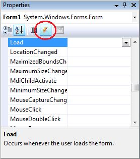
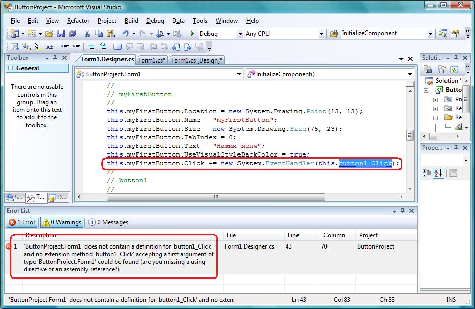

| Тема 3. Методы формы. События на примере формы. | ||
| Назад | ||
|
Класс Form содержит множество методов, которые мы можем использовать и которые наследуются нашими формами:
Методы мы так же будем рассматривать по мере надобности, а пока этого на ближайшую главу достаточно. В платформе .NET, как и в Win32, для информирования о возникновении какого-либо состояния или о действии используются события, или иногда их еще называют сообщения (по-английски: events). Например, в ответ на изменение положения окна оно генерирует событие определенного класса, которое мы можем перехватить. Для того чтобы перехватить событие, нужно создать его обработчик. Обработчик события по сути является методом, который регистрируется на отлов определенного события от определенного элемента управления/формы/компонента. Когда наступит событие, то этот самый элемент управления/форма/компонент вызовет метод, в котором мы можем написать код реакции на событие. С помощью визуального дизайнера Visual Studio создание обработчиков событий превращается в тривиальную задачу. На рис. 5.8 показана панель Properties в режиме просмотра событий. Чтобы увидеть что-то подобное, нужно выделить компонент, событие которого вы хотите поймать, и нажать кнопку Events в панели Properties (на рис. 5.8 эта кнопка обведена кружком). Чтобы вернуться обратно к просмотру свойств, надо щелкнуть по кнопке Properties, которая находится левее.
 Рис. 5.8. Панель Properties при просмотре событий Теперь, чтобы создать нужный обработчик события, достаточно щелкнуть двойным щелчком в поле справа от имени события. Среда разработки создаст необходимое событие, добавит его регистрацию в своем методе InitializeComponent(), переключится в режим кода и установит курсор в тело метода, созданного для обработки события. Давайте создадим обработчик события MouseClick. Выделите форму, перейдите в панели Properties в режим просмотра событий Events и щелкните двойным щелчком напротив события. Будет создан метод Form1_MouseClick(): private void Form1_MouseClick(object sender, MouseEventArgs e)
{
MessageBox.Show("Клик");
}
Я здесь добавил внутрь метода обработки события вызов статического метода Show() класса MessageBox. Этот метод отображает на рабочем столе диалоговое окно с сообщением, которое вы передали в качестве параметра. В нашем случае каждый раз, когда вы щелкнете по форме, будет появляться сообщение: Клик. Очень интересным является вопрос о том, какие события получает форма, когда появляется и уничтожается. При загрузке формы генерируются следующие события и именно в такой последовательности:
Событие Load генерируется, когда вы впервые вызываете метод Show() для отображения формы. Посмотрим на следующий пример: MyForm form = new MyForm(); form.Show(); // отобразить форму form.Hide(); // спрятать с помощью Hide() form.Show(); // Отобразить снова Событие Load будет сгенерировано только при первом вызове метода Show(), потому что в этот момент начнет происходить загрузка формы. Когда мы вызываем метод Hide(), то форма остается загруженной, просто прячется с экрана. Следующий вызов метода Show() только изменяет видимость окна, а загрузки не произойдет, поэтому и событие Load больше генерироваться не станет. Очень часто у вас будут возникать казусы со случайным созданием событий. Например, если щелкнуть двойным щелчком по компоненту в визуальном дизайнере, то будет создан обработчик события по умолчанию для этого компонента. Так, для кнопки событием по умолчанию является Click, и если вы случайно щелкнете двойным щелчком по компоненту в визуальном дизайнере, то будет создан такой обработчик события. А если вы не хотели его создавать? Оставлять заготовку метода в коде? Наверное, лучше, все же, убрать обработчик события, чтобы он не мешал. Как это сделать? Существует несколько вариантов:
Если вы создали обработчик события и тут же удалили метод в редакторе кода, то при этом среда разработки не удалит регистрацию события в методе InitializeComponent(). Это придется делать вручную. Как это сделать безболезненно? Давайте посмотрим на примере. Создайте новое приложение и поместите на его форму кнопку. Щелкните по кнопке двойным щелчком, и среда разработки переключит вас в редактор кода с созданным для обработки события методом: private void button1_Click(object sender, EventArgs e)
{
}
Удалите эту заготовку кода из редактора и попробуйте скомпилировать проект. Внизу окна появится сообщение об ошибке (рис. 5.9). В этой ошибке компилятор сообщает нам, что обработчик события не найден. Щелкните двойным щелчком по ошибке, и откроется вкладка с файлом (Form1.Designer.cs), где найдена ошибка, и будет выделена строка кода, которую добавил визуальный редактор для регистрации события. События — это отдельная тема, которая будет рассмотрена в главе 10. А сейчас нужно только понимать, что для того, чтобы избавиться от ошибки, нужно удалить строку, которую выделил нам редактор. Так вы вручную удалите регистрацию, и проект откомпилируется без проблем.
 Рис. 5.9. Сообщение об ошибке, что обработчик события не найден
|
||
| Конспект подготовлен Бакулиным А. М. 2022 год. | ||